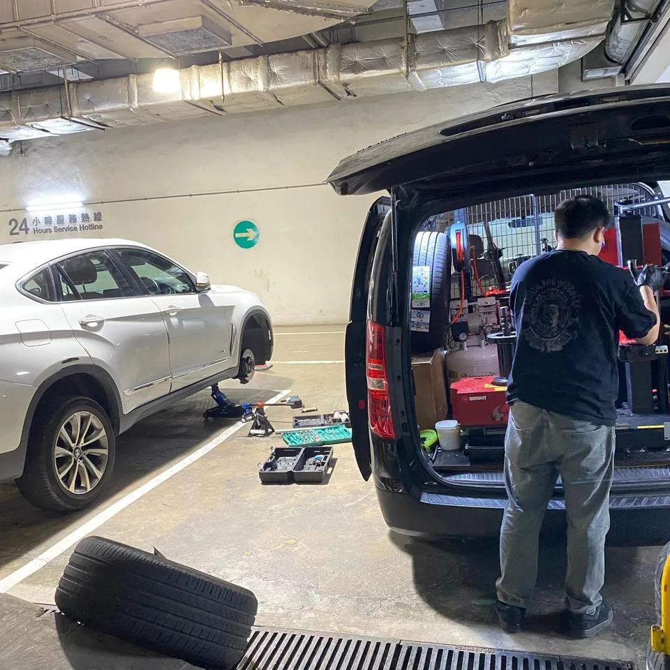
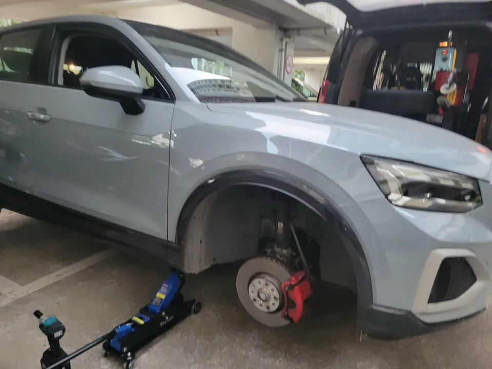
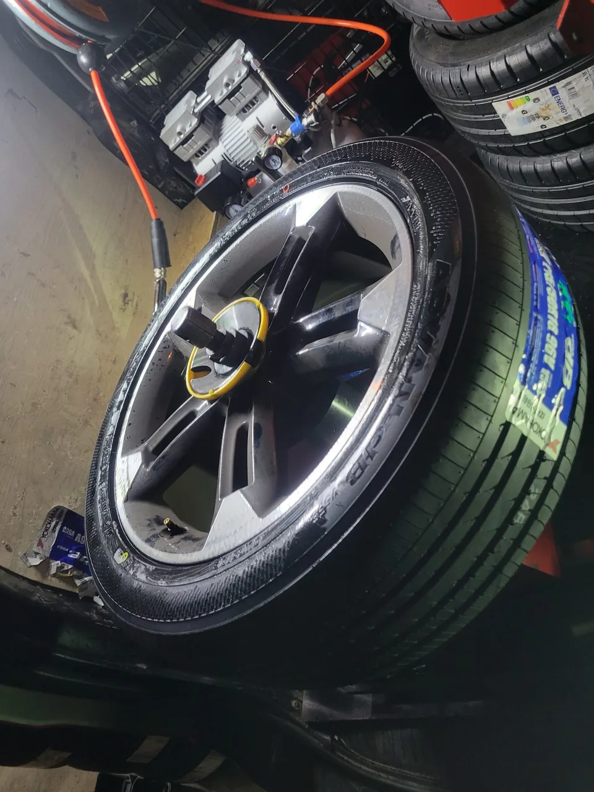
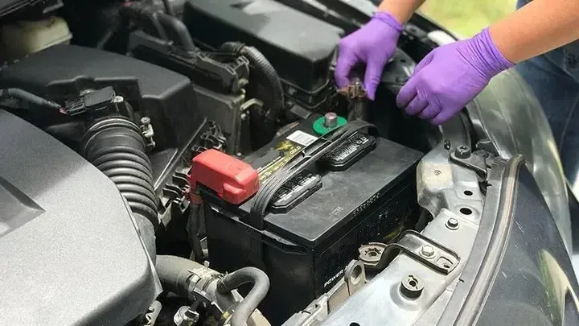

全港 24/7 常見問題
常見問題
快速搵答案
由補呔換呔、搭電換電池，到到場時間同收費，常見情況已經分類整理。遇上緊急狀況，唔使逐條睇，直接聯絡團隊。
流動服務現場 專業設備
工具同技術，
直接去到你架車。
唔需要先拖去車房。由拆呔、檢查、輪胎處理到搭電，流動團隊將常用設備帶到現場，先了解情況，再講清楚處理方法同收費。




4 個常見答案
補呔・換呔服務
補胎一次多少錢？
價格會因輪胎損壞程度、尺寸、材質及維修地點等因素而有所差異。簡單補胎約 $100–200，側壁損壞則可能要 $200–500，更複雜的維修價格更高。
建議直接 WhatsApp 5111 5707，提供輪胎照片即可獲得精確報價。我們承諾價格透明合理，絕無隱藏收費。
幾時需要換呔？
輪胎需要更換的主要情況：
- 胎紋深度：根據香港法例，輪胎胎紋深度低於 1.6 毫米便需要更換；可以利用輪胎上的磨損指示器判斷。
- 輪胎老化：即使胎紋深度足夠，使用超過 5 年亦建議更換；留意裂痕、硬化或變形。
- 使用年限：生產日期印在外側胎壁上，例如 3818 代表 2018 年第 38 週；建議使用年限為 3–5 年。
- 輪胎受損：如被刺穿、胎壁變形或胎面嚴重磨損，都需要立即更換。
怎麼判斷輪胎要不要換？
每一條輪胎在胎紋區塊間都有 1.6mm 高的指示點（又稱輪胎安全線或磨損記號），用來協助監控胎紋深度。
只要看胎紋是否與指示點切齊即可。若已切齊，就表示該換輪胎了。如果不確定，歡迎拍照傳給我們，由專業團隊協助判斷。
有哪些品牌的輪胎？
我們提供各大國際品牌輪胎，包括 Bridgestone、Michelin、Goodyear、Dunlop、Continental 等。所有輪胎均為正貨，品質保證。
根據您的車型和需求，我們會推薦合適的輪胎品牌和型號。
試下另一個關鍵字，或者直接 WhatsApp 團隊。
2 個常見答案
搭電・換電池服務
搭電服務是怎樣的？
我們提供專業過江龍搭電服務，使用專業設備為汽車電池充電啟動，整個過程約需 10–15 分鐘。
搭電後建議行車至少 30 分鐘讓電池充電；如果電池經常沒電，建議考慮更換新電池。
汽車電池一般用幾耐要換？
一般汽車電池壽命約為 2–4 年，視乎使用習慣和天氣環境。以下情況建議更換：
- 啟動時引擎轉動明顯變慢
- 電池已使用超過 3 年
- 經常需要搭電
- 電池外觀膨脹或漏液
我們提供即場檢測電池健康狀況服務，可以協助判斷是否需要更換。
試下另一個關鍵字，或者直接 WhatsApp 團隊。
6 個常見答案
服務流程・收費
你們多快可以到達？
我們承諾全港覆蓋，一般情況下最快 15 分鐘到場。實際到達時間視乎您的位置和當時路面情況。
24 小時全天候服務，無論日夜，隨時為您出動。
服務範圍覆蓋哪些地區？
服務覆蓋全港各區，包括：
- 港島：中環、灣仔、銅鑼灣、北角、太古等
- 九龍：旺角、尖沙咀、觀塘、九龍灣等
- 新界：沙田、大埔、元朗、屯門、將軍澳等
無論您身處何處，我們都能為您提供服務。
流動輪胎服務車有什麼設備？
流動服務車配備專業輪胎店級別器材，包括：
- 輪胎裝拆機：即場拆裝輪胎
- 平衡機（戥胎機）：確保輪胎平衡
- 專業補胎工具：多種補胎方案
- 搭電設備：專業過江龍
無需拖車到車房，我們將專業服務帶到您面前。
如何收費？接受什麼付款方式？
收費透明合理，所有服務項目均會在施工前清楚報價，絕無隱藏收費。
付款方式包括現金、轉數快（FPS）、PayMe、銀行轉賬等。歡迎 WhatsApp 報價查詢。
如何預約服務？
預約非常簡單：
- 致電 5111 5707 或 WhatsApp 聯繫我們
- 告知您的位置和所需服務
- 我們即時報價並安排出發
緊急情況可直接來電，我們會以最快速度趕到現場。
爆呔了應該點做？
爆呔時請保持冷靜，按以下步驟處理：
- 緊握方向盤，不要急剎車
- 慢慢減速，打開危險警示燈
- 安全停靠路邊或安全位置
- 如在高速公路上，移至緊急停車帶
- 立即致電 5111 5707 或 WhatsApp 聯繫我們
切勿繼續行駛。我們會以最快速度趕到現場處理。
試下另一個關鍵字，或者直接 WhatsApp 團隊。
24 小時接聽